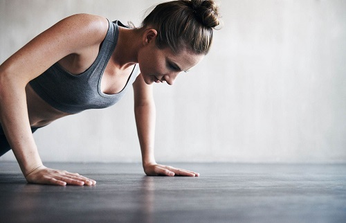

建议
运动

运动：力量训练，有训练后燃脂(补燃)、细胞内粒线体增加的幅度、维持或增加肌肉、长时间提高新陈代谢与基础代谢率的作用。 HIIT，透过短时间的高耗能运动加上短暂歇息的方式来降低体脂肪率。 传统的、低强度的有氧运动。虽然可以最直接的燃烧脂肪，但缺点在于整体效益较差
饮食
饮食结构建议为：碳水化合物45-65%，蛋白质10-35%，脂肪20-35%。 多食用提供健康蛋白、纤维和适量脂肪的食物来填饱肚子，来维持饱腹感，调节血糖。 多食用鱼虾等水产品、禽类和瘦肉为，减少烹调油，搭配适量主食，限制甜食、饮料。（注意：千万不要节食或单一元素进食）